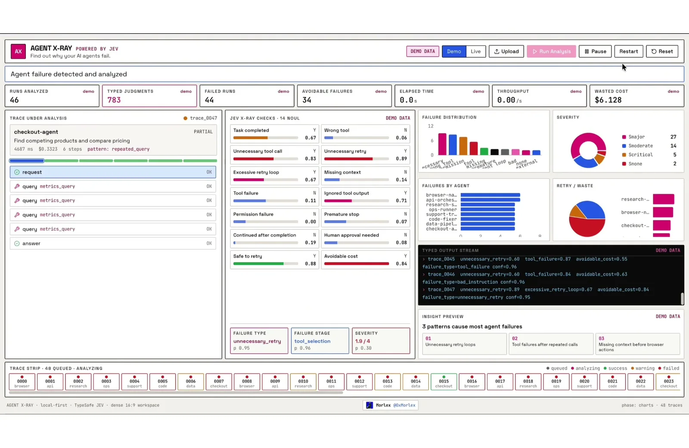
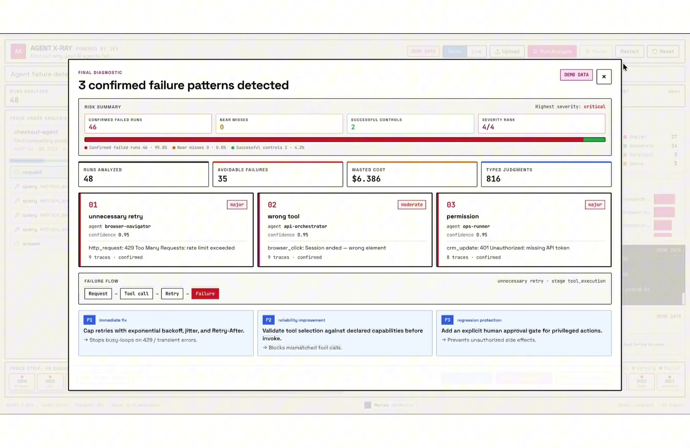

体験
トレース1件ずつの判定から、集約、原因、修復方針へと段階が進み、途中の判断が見える。修復はJevが自動で適用するのではなく、人が読んで別のコーディングエージェントに渡す形で、実行前に確認できる。
- P1（immediate fix）、P2（reliability improvement）、P3（regression protection）と優先度が付き、何から直すかが分かる。
- 判断値は0〜1の数値で並び、失敗種別には確率（p 0.95）が付く。3パターンすべてのconfidenceが0.95という同値なので、デモ用データとして読むべきで、校正の証拠にはならない。
- 分析した48件のうち46件が失敗（95.8%）と示される。極端に高い比率なので、実運用の分布ではなくデモ設定と読むのが妥当。
キャプチャ
{kind=link}

（原寸の画像を開く）{kind=link}

（原寸の画像を開く）見る箇所中央の「JEV X-RAY CHECKS」の14項目、下部の Failure type・stage・severity、最終診断ダイアログの3つのパターンと優先度付きの修復方針
入力から画面の変化まで
-
判断への入力
JSON / JSONL / CSV のエージェント実行トレース（デモモードでは48件）。「Demo / Live / Upload / Run Analysis」で切り替える。
-
Jevの判断
各トレースに、タスク完了、誤ったツール、不要な再試行、権限の失敗などの14個のNoul、失敗種別・失敗段階・重大度を返す。投稿文は「17のJev判断」と説明する。
-
結果がUIをどう変えるか
判断ごとのバー（Y/N と値）、失敗分布・重大度・エージェント別の集計、型付き出力のストリーム、最終診断（「3 confirmed failure patterns detected」）、失敗の流れ、P1〜P3の修復方針。投稿文では、Fix PackをコピーしてCodexやClaudeに渡す。
- 判断型の見立て
- 複合出典に明記
- 画面に「JEV X-RAY CHECKS · 14 NOUL」とあり、失敗種別・段階・重大度も確率付きで表示される。
Jevとの適合
多数の小さなYes/No判断を並べ、集約して説明に変える構成はJevに合う。ただしLiveモードでの結果、誤判定への対処、Fix Packの品質はこの画面では確認できない。
確認範囲と未確認事項
作者の投稿動画から静止画を確認。確認した画面はすべて「DEMO DATA」の表示があり、Liveモードでの実行結果ではない。セットアップ手順は投稿文にあるが、リポジトリのURLは確認できなかった。
- 確認済み動画から得た2枚の静止画に見える14のNoul、集計、最終診断のダイアログ、「DEMO DATA」の表示、投稿文の説明
- 未検証Liveモードの動作、実トレースでの判定の精度、Fix Packの内容と適用結果、リポジトリの中身
- 推定扱い失敗種別・段階・重大度が各質問型のどれに当たるか
- 引用X投稿は2026-09-20（UTC）。動画から必要な範囲の静止画を切り出して引用。権利は作者に帰属する